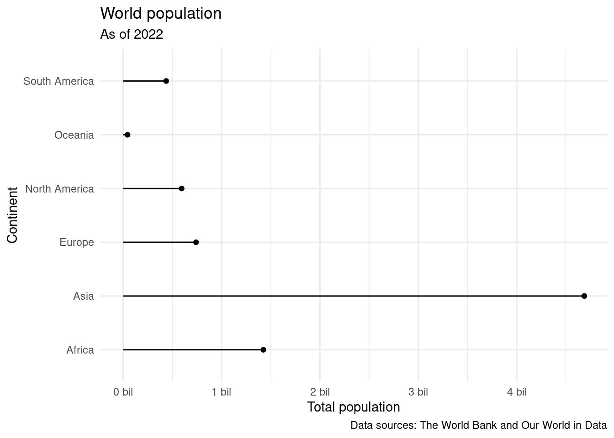

library(tidyverse)
library(scales)AE 07: Types and classes and populations
Application exercise
Packages
We will use the following two packages in this application exercise.
- tidyverse: For data import, wrangling, and visualization.
- scales: For better axis labels.
Type coercion
- Demo: Determine the type of the following vector. And then, change the type to numeric.
x <- c("1", "2", "3")
# add code here- Demo: Once again, determine the type of the following vector. And then, change the type to numeric. What’s different than the previous exercise?
y <- c("a", "b", "c")
# add code here- Demo: Once again, determine the type of the following vector. And then, change the type to numeric. What’s different than the previous exercise?
z <- c("1", "2", "three")
# add code here- Demo: Suppose you conducted a survey where you asked people how many cars their household owns collectively. And the answers are as follows:
survey_results <- tibble(cars = c(1, 2, "three"))
survey_results# A tibble: 3 × 1
cars
<chr>
1 1
2 2
3 threeThis is annoying because of that third survey taker who just had to go and type out the number instead of providing as a numeric value. So now you need to update the cars variable to be numeric. You do the following:
# add code hereAnd now things are even more annoying because you get a warning NAs introduced by coercion that happened while computing cars = as.numeric(cars) and the response from the third survey taker is now an NA (you lost their data). Fix your mutate() call to avoid this warning.
# add code hereYour turn: First, guess the type of the vector. Then, check if you guessed right. I’ve done the first one for you, you’ll see that it’s helpful to check the type of each element of the vector first.
c(1, 1L, "C")
v1 <- c(1, 1L, "C")
# to help you guess
typeof(1)[1] "double"typeof(1L)[1] "integer"typeof("C")[1] "character"# to check after you guess
typeof(v1)[1] "character"- `c(1L / 0, "A")`v2 <- c(1L / 0, "A")
# to help you guess
typeof(1L)[1] "integer"typeof(0)[1] "double"typeof(1L / 0)[1] "double"typeof("A")[1] "character"# to check after you guess
typeof(v2)[1] "character"- `c(1:3, 5)`v3 <- c(1:3, 5)
# to help you guess
# add code here
# to check after you guess
# add code here- `c(3, "3+")`v4 <- c(3, "3+")
# to help you guess
# add code here
# to check after you guess
# add code here- `c(NA, TRUE)`v5 <- c(NA, TRUE)
# to help you guess
# add code here
# to check after you guess
# add code herePopulations in continents
In the previous application exercise you joined two datasets (after a bit of data cleaning), and calculated total population in each continent and visualized it.
- First, you loaded the data:
continents <- read_csv("https://sta199-s24.github.io/data/continents.csv")Rows: 285 Columns: 4
── Column specification ────────────────────────────────────────────────────────
Delimiter: ","
chr (3): entity, code, continent
dbl (1): year
ℹ Use `spec()` to retrieve the full column specification for this data.
ℹ Specify the column types or set `show_col_types = FALSE` to quiet this message.population <- read_csv("https://sta199-s24.github.io/data/world-pop-2022.csv")Rows: 217 Columns: 3
── Column specification ────────────────────────────────────────────────────────
Delimiter: ","
chr (1): country
dbl (2): year, population
ℹ Use `spec()` to retrieve the full column specification for this data.
ℹ Specify the column types or set `show_col_types = FALSE` to quiet this message.- Then you cleaned the country names where the spelling in one data frame didn’t match the other, and joined the data sets:
population_continent <- population |>
mutate(country = case_when(
country == "Congo, Dem. Rep." ~ "Democratic Republic of Congo",
country == "Congo, Rep." ~ "Congo",
country == "Hong Kong SAR, China" ~ "Hong Kong",
country == "Korea, Dem. People's Rep." ~ "North Korea",
country == "Korea, Rep." ~ "South Korea",
country == "Kyrgyz Republic" ~ "Kyrgyzstan",
.default = country
)
) |>
left_join(continents, by = join_by(country == entity))- Then, you calculated total population for each continent.
population_summary <- population_continent |>
group_by(continent) |>
summarize(total_pop = sum(population)) |>
arrange(desc(total_pop))- And finally, you visualized these data.
ggplot(population_summary) +
geom_point(aes(x = total_pop, y = continent)) +
geom_segment(aes(y = continent, yend = continent, x = 0, xend = total_pop)) +
scale_x_continuous(labels = label_number(scale = 1/1000000, suffix = " bil")) +
theme_minimal() +
labs(
x = "Total population",
y = "Continent",
title = "World population",
subtitle = "As of 2022",
caption = "Data sources: The World Bank and Our World in Data"
)
- Question: Take a look at the visualization. How are the continents ordered? What would be a better order?
Add answer here.
- Demo: Reorder the continents on the y-axis (levels of
continent) in order of value of total population. You will want to use a function from the forcats package, see https://forcats.tidyverse.org/reference/index.html for inspiration and help.
# add code here- Think out loud: Describe what is happening in the each step of the code chunk above.
Add answer here.